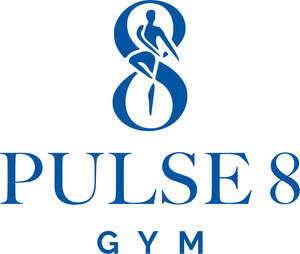

Trade Mark Journal No.2025/045 7 November 2025
UK00004282466 23 October 2025 (5,6,9,10,16,18,21,24,25,27,28,30,32,35,36,41,43,44)

- Class 5
- Bath salts for medical purposes; dietary and nutritional supplements; dietary and nutritional supplements in the form of drinks and food bars; dietary and nutritional supplements in the form of pills and capsules; dietary food supplements; dietary food supplements in liquid drink form; dietary supplements; Epsom salts; Epsom salts for medical purposes; food and dietary supplements for sports and performance enhancement; meal replacement and dietary supplement drink mixes; meal replacement powders; medicated mineral salts for baths; mineral salts for baths; mineral salts for medical purposes; mineral supplements; mineral water salts; multivitamins; nutritional supplement energy bars; nutritional supplement food bars; nutritional supplement meal replacement bars for boosting energy; oral rehydration salts; potassium salts for medical purposes; powdered nutritional and dietary supplement drink mixes; powdered nutritional supplement drink; powdered nutritional supplement drink mixes; powdered nutritional supplement drink mixes and nutritional ingredients for various powdered and ready-to-mix beverages; powdered protein and nutrition drink mixes; protein dietary supplements; protein powder; protein supplement shakes; protein supplements; salts for medical purposes; salts for mineral water baths; sodium salts for medical purposes; vitamin and mineral nutritional supplements; vitamins and vitamin preparations.
- Class 6
- Locks and keys, of metal; metallic push button padlocks; padlocks.
- Class 9
- Artificial intelligence software for exercise, fitness and healthcare; artificial intelligence software for exercise, fitness and rehabilitation; computer mouse mats; downloadable publications in the fields of gyms, exercise, bodybuilding, nutrition, beauty, health, fitness, and rehabilitation; electronic publications in the fields of gyms, exercise, bodybuilding, nutrition, beauty, health, fitness, and rehabilitation; health and fitness monitoring software; magnets; mouse mats; padlocks, electronic; pre-recorded exercise and fitness DVDs; refrigerator magnets; smart padlocks; software relating to fitness and rehabilitation.
- Class 10
- Apparatus for achieving physical fitness (for medical use); apparatus for medical rehabilitation; apparatus for use in toning muscles for medical rehabilitation; body rehabilitation apparatus for medical purposes; exercise apparatus for medical rehabilitative purposes; exercise equipment for medical rehabilitative purposes; exercise machines for medical rehabilitative purposes; physiotherapy and rehabilitation equipment; physiotherapy apparatus; step-up machines for use in physiotherapy.
- Class 16
- Calendars; gift cards and gift vouchers; gift vouchers for use in relation to gyms, fitness classes, health spas, and beauty spas; magazines in the fields of gyms, exercise, bodybuilding, nutrition, beauty, health, fitness, and rehabilitation; magazines, catalogues, brochures, periodicals; newsletters in the fields of gyms, exercise, bodybuilding, nutrition, beauty, health, fitness, and rehabilitation; newsletters, flyers, posters; periodical publications in the fields of gyms, exercise, bodybuilding, nutrition, beauty, health, fitness, and rehabilitation; printed publications; printed publications in the fields of gyms, exercise, bodybuilding, nutrition, beauty, health, fitness, and rehabilitation; vouchers for use in relation to gyms, health spas, and beauty spas.
- Class 18
- Athletic bags; backpacks; bags; bags for sport; bags for yoga mats; cosmetic bags; cosmetic bags sold empty; cosmetics and make-up bags; golf umbrellas; gym bags; hand bags; holdalls; holdalls and rucksacks; leather and imitations of leather, and goods made of these materials, namely bags, wallets and purses; leather bags and wallets; luggage and carrying bags; luggage, bags, wallets and other carriers; make-up bags; make-up bags sold empty; purses; rucksacks; sports bags; textile shopping bags; toiletry bags; toiletry kit and shaving kit bags; tote bags; travel bags and cases; trunks, bags, rucksacks, wallets and purses; umbrellas; umbrellas and parasols; wallets; wash bags.
- Class 21
- Abrasive sponges for the skin; aerosol dispensers for incense sprays; aluminium water bottles; aromatic oil diffusers, other than reed diffusers; beauty care utensils; bottle coolers; bottles; brushes; ceramic mugs; China mugs; coffee cups; comb cases; combs; cosmetic utensils; cups; cups and mugs; drinking bottles; eyebrow brushes; fitted cosmetic bags; fitted make up bags; fitted wash bags; flasks; hair combs; hairbrushes; incense burners; insulated bottles; mugs; non-electric appliances for removing make-up; perfume and incense burners; plastic water bottles; powder compacts; reusable bottles; reusable stainless steel water bottles; soap boxes and holders; sponges; sprayers and vaporisers; toothbrushes; toothpicks; travel mugs; tumblers; water bottles; water bottles sold empty.
- Class 24
- Beach towels; body mops for washing the body; cloths for washing the body; exfoliating bath mitts; face cloths; face towels; flannels; hand towels; mitts for washing the body; tea towels; towels; towels of textile; wash cloths.
- Class 25
- Active wear; baseball caps; bath robes; bath sandals; bath slippers; bathing caps; bathrobes; beanie hats; belts; caps; casual shirts; clothing for running; clothing, footwear, headgear; dressing gowns; eye masks; fitness clothing; flip flops; gloves; gym clothing; gym shoes; gymwear; hats; headbands; hooded sweatshirts; jogging bottoms; jumpers; leggings; leisure clothing; leisurewear; lounging robes; men's clothing; polo shirts; robes; running shoes; running vests; shirts; shorts; slippers; socks; sports and leisure clothing; sports bras; sports clothing; sports footwear; sports jackets; sports shirts; sportswear; sweat absorbent clothing; sweat bands; sweaters; sweatshirts; swimming caps; swimming shorts; swimming trunks; swimwear; tops; tracksuits; trousers; trunks; t-shirts; turbans for the hair; underwear; vests; wellington boots; women's clothing; yoga pants; yoga wear.
- Class 27
- Exercise mats; gymnasium exercise mats; personal exercise mats; yoga mats.
- Class 28
- Apparatus for achieving physical fitness; archery implements; balls; body building apparatus; body rehabilitation apparatus; body training apparatus; bodybuilding and weightlifting clothing straps, wristbands and wrist straps; boxing gloves; clothing for teddy bears; cuddly toys; exercise balls; exercise bands; exercise bicycles; exercise weights; fishing articles; fitness exercise machines; fitness steppers; fluffy toys; games; gloves for sports; golf clubs; gym balls; gym balls for yoga; gymnastic and sporting articles; indoor fitness apparatus; machines for physical exercises; plush dolls; plush stuffed toys; plush toys; protective articles and paddings for sporting purposes; sports balls, gloves, rackets and nets; stuffed and plush toys; stuffed animals [toys]; stuffed bean-filled toys; stuffed dolls; stuffed plush toys; stuffed toy animals; stuffed toy bears; stuffed toys; swimming flippers; teddy bears; toy animals; toy dolls; toys, games, and playthings.
- Class 30
- Cereal bars; energy bars; protein based food bars.
- Class 32
- Aerated fruit juices; aerated mineral waters; aerated waters; bottled drinking water; carbonated water; concentrates for use in the preparation of energy drinks; concentrates for use in the preparation of soft drinks; concentrates for use in the preparation of sports drinks; cordials; drinking water; flavoured mineral water; fruit drinks; fruit juices; fruit smoothies; isotonic drinks; mineral water; protein-enriched sports beverages; smoothies; soda water; soft drinks; sparkling water; sports drinks; sports drinks containing electrolytes; spring water; still water; syrups for making flavoured mineral waters; syrups for making soft drinks; table water; vegetable drinks; vegetable juice; vegetable smoothies; vegetable-based beverages; water enhanced with minerals.
- Class 35
- Retail services connected with the sale of bath salts for medical purposes, dietary and nutritional supplements, dietary and nutritional supplements in the form of drinks and food bars, dietary and nutritional supplements in the form of pills and capsules, dietary food supplements, dietary food supplements in liquid drink form, dietary supplements, Epsom salts, Epsom salts for medical purposes, food and dietary supplements for sports and performance enhancement, meal replacement and dietary supplement drink mixes, meal replacement powders, medicated mineral salts for baths, mineral salts for baths, mineral salts for medical purposes, mineral supplements, mineral water salts, multivitamins, nutritional supplement energy bars, nutritional supplement food bars, nutritional supplement meal replacement bars for boosting energy, oral rehydration salts, potassium salts for medical purposes, powdered nutritional and dietary supplement drink mixes, powdered nutritional supplement drink, powdered nutritional supplement drink mixes, powdered nutritional supplement drink mixes and nutritional ingredients for various powdered and ready-to-mix beverages, powdered protein and nutrition drink mixes, protein dietary supplements, protein powder, protein supplement shakes, protein supplements, salts for medical purposes, salts for mineral water baths, sodium salts for medical purposes, vitamin and mineral nutritional supplements, vitamins and vitamin preparations, keyrings, keyrings of common metal, locks and keys of metal, metallic push button padlocks, padlocks, artificial intelligence software for exercise, artificial intelligence software for fitness, artificial intelligence software for healthcare, artificial intelligence software for rehabilitation, computer mouse mats, downloadable publications in the field of gyms, downloadable publications in the field of exercise, downloadable publications in the field of bodybuilding, downloadable publications in the field of nutrition, downloadable publications in the field of beauty, downloadable publications in the field of health, downloadable publications in the field of fitness, downloadable publications in the field of rehabilitation, electronic publications in the field of gyms, electronic publications in the field of exercise, electronic publications in the field of bodybuilding, electronic publications in the field of nutrition, electronic publications in the field of beauty, electronic publications in the field of health, electronic publications in the field of fitness, electronic publications in the field of rehabilitation, health and fitness monitoring software, magnets, mouse mats, electronic padlocks, pre-recorded exercise and fitness DVDs, refrigerator magnets, smart padlocks, software relating to fitness and rehabilitation, apparatus for achieving physical fitness (for medical use), apparatus for medical rehabilitation, apparatus for use in toning muscles for medical rehabilitation, body rehabilitation apparatus for medical purposes, exercise apparatus for medical rehabilitative purposes, exercise equipment for medical rehabilitative purposes, exercise machines for medical rehabilitative purposes, physiotherapy and rehabilitation equipment, physiotherapy apparatus, step-up machines for use in physiotherapy, calendars, gift cards and gift vouchers, gift vouchers for use in relation to gyms, gift vouchers for use in relation to fitness classes, gift vouchers for use in relation to health spas, gift vouchers for use in relation to beauty spas, magazines in the field of gyms, magazines in the field of exercise, magazines in the field of bodybuilding, magazines in the field of nutrition, magazines in the field of beauty, magazines in the field of health, magazines in the field of fitness, magazines in the field of rehabilitation, magazines, catalogues, brochures, periodicals, newsletters in the field of gyms, newsletters in the field of exercise, newsletters in the field of bodybuilding, newsletters in the field of nutrition, newsletters in the field of beauty, newsletters in the field of health, newsletters in the field of fitness, newsletters in the field of rehabilitation, newsletters, flyers, posters, periodical publications in the field of gyms, periodical publications in the field of exercise, periodical publications in the field of bodybuilding, periodical publications in the field of nutrition, periodical publications in the field of beauty, periodical publications in the field of health, periodical publications in the field of fitness, periodical publications in the field of rehabilitation, printed publications, printed publications in the field of gyms, printed publications in the field of exercise, printed publications in the field of bodybuilding, printed publications in the field of nutrition, printed publications in the field of beauty, printed publications in the field of health, printed publications in the field of fitness, printed publications in the field of rehabilitation, vouchers for use in relation to gyms, vouchers for use in relation to health spas, vouchers for use in relation to beauty spas, athletic bags, backpacks, bags, bags for sport, bags for yoga mats, belts, cosmetic bags, cosmetic bags sold empty, cosmetics and make-up bags, golf umbrellas, gym bags, hand bags, holdalls, holdalls and rucksacks, leather and imitations of leather, goods made of leather and imitations of leather, leather bags and wallets, luggage and carrying bags, luggage and other carriers, make-up bags, make-up bags sold empty, purses, rucksacks, sports bags, textile shopping bags, toiletry bags, toiletry kit and shaving kit bags, tote bags, travel bags and cases, trunks, umbrellas, parasols, wallets, wash bags, abrasive sponges for the skin, aerosol dispensers for incense sprays, aluminium water bottles, aromatic oil diffusers other than reed diffusers, beauty care utensils, bottle coolers, bottles, brushes, ceramic mugs, China mugs, coffee cups, comb cases, combs, cosmetic utensils, cups, cups and mugs, drinking bottles, eyebrow brushes, fitted cosmetic bags, fitted make up bags, fitted wash bags, flasks, hair combs, hairbrushes, incense burners, insulated bottles, mugs, non-electric appliances for removing make-up, perfume and incense burners, plastic water bottles, powder compacts, reusable bottles, reusable stainless steel water bottles, soap boxes and holders, sponges, sprayers and vaporisers, toothbrushes, toothpicks, travel mugs, tumblers, water bottles, water bottles sold empty, beach towels, body mops for washing the body, cloths for washing the body, exfoliating bath mitts, face cloths, face towels, flannels, hand towels, mitts for washing the body, tea towels, towels, towels of textile, wash cloths, active wear, baseball caps, bath robes, bath sandals, bath slippers, bathing caps, bathrobes, beanie hats, caps, casual shirts, clothing for running, clothing, footwear, headgear, dressing gowns, eye masks, fitness clothing, flip flops, gloves, gym clothing, gym shoes, gymwear, hats, headbands, hooded sweatshirts, jogging bottoms, jumpers, leggings, leisure clothing, leisurewear, lounging robes, men's clothing, polo shirts, robes, running shoes, running vests, shirts, shorts, slippers, socks, sports and leisure clothing, sports bras, sports clothing, sports footwear, sports jackets, sports shirts, sportswear, sweat absorbent clothing, sweat bands, sweaters, sweatshirts, swimming caps, swimming shorts, swimming trunks, swimwear, tops, tracksuits, trousers, trunks, t-shirts, turbans for the hair, underwear, vests, wellington boots, women's clothing, yoga pants, yoga wear, exercise mats, gymnasium exercise mats, personal exercise mats, yoga mats, apparatus for achieving physical fitness, archery implements, balls, body building apparatus, body rehabilitation apparatus, body training apparatus, bodybuilding and weightlifting clothing straps, bodybuilding and weightlifting wristbands, bodybuilding and weightlifting wrist straps, boxing gloves, clothing for teddy bears, cuddly toys, exercise balls, exercise bands, exercise bicycles, exercise weights, fishing articles, fitness exercise machines, fitness steppers, fluffy toys, games, gloves for sports, golf clubs, gym balls, gym balls for yoga, gymnastic and sporting articles, indoor fitness apparatus, machines for physical exercises, plush dolls, plush stuffed toys, plush toys, protective articles and paddings for sporting purposes, sports balls, sports gloves, sports rackets, sports nets, stuffed and plush toys, stuffed animals [toys], stuffed bean-filled toys, stuffed dolls, stuffed plush toys, stuffed toy animals, stuffed toy bears, stuffed toys, swimming flippers, teddy bears, toy animals, toy dolls, toys, playthings, cereal bars, energy bars, protein based food bars, aerated fruit juices, aerated mineral waters, aerated waters, bottled drinking water, carbonated water, concentrates for use in the preparation of energy drinks, concentrates for use in the preparation of soft drinks, concentrates for use in the preparation of sports drinks, cordials, drinking water, flavoured mineral water, fruit drinks, fruit juices, fruit smoothies, isotonic drinks, mineral water, protein-enriched sports beverages, smoothies, soda water, soft drinks, sparkling water, sports drinks, sports drinks containing electrolytes, spring water, still water, syrups for making flavoured mineral waters, syrups for making soft drinks, table water, vegetable drinks, vegetable juice, vegetable smoothies, vegetable-based beverages, water enhanced with minerals.
- Class 36
- Issue of tokens of value in the nature of gift cards; issue of tokens of value in the nature of gift cards for the redemption of gym and exercise classes, spa services, spa experience and spa pamper days and spa sessions; issue of tokens of value in the nature of gift vouchers; issue of tokens of value in the nature of gift vouchers for the redemption of gym and exercise classes, spa services, spa experience and spa pamper days and spa sessions; information, advisory and consultancy services relating to the aforesaid services.
- Class 41
- Arranging and conducting conferences, social functions and events; arranging and conducting seminars and lectures; arranging and conducting sporting events, athletic events and competitions; arranging for ticket reservations for shows and other entertainment events; booking of seats for shows and booking of theatre tickets; conducting educational support programmes for healthcare professionals; conducting fitness classes; education; educational and training services relating to healthcare; educational health and fitness information services; educational services relating to exercise; educational services relating to yoga; electronic publications in the fields of beauty, health, fitness, and rehabilitation; entertainment services; entertainment services provided by hotels; entertainment ticket agency services; exercise and fitness classes; exercise facilities; exercise instruction; fitness training services; gym activity classes; gym services; health and fitness club services; health and fitness training; health and wellness training; health club services; health education; instruction courses relating to health and fitness; instruction, tuition and practical training services all relating to relaxation, sports, fitness and exercise; instructional and educational services in diet, nutrition, wellbeing and in rehabilitation through movement and physical exercise; organisation of sporting and fitness activities; organising of recreational events; personal fitness training services; personal training services; physical fitness consultation; physical fitness education services; providing entertainment, sporting and cultural activities; providing fitness and exercise facilities; providing health club and gymnasium services; provision and management of sports facilities and sporting events; provision of dancing and aerobics facilities; provision of entertainment facilities in hotels; provision of exercise facilities; provision of exercise training programmes for individuals; provision of facilities for gymnastic and sporting activities; provision of gymnastic and swimming bath facilities and of fitness and relaxation pools; provision of health club services; provision of horse riding and of fishing facilities; provision of information relating to physical exercises via an online website; provision of instruction in sporting, gymnastic and fitness matters; provision of recreational and leisure facilities; provision of recreational facilities; provision of sports and fitness facilities and activities; provision of swimming pool facilities; provision of training; provision of training and education relating to gym use, gymnastics, weight training, bodybuilding, aerobics, physical exercise, physical rehabilitation, diet, nutrition, health and beauty; publication of printed matter and printed publications in the fields of beauty, health, fitness, and rehabilitation; recreational services; rental of sports equipment; reservation services for concert tickets; reservation services for show tickets; reservation services for theatre tickets; services for the provision of exercise equipment; sporting activities; sporting and cultural activities; sporting and recreational activities; sports and fitness services; sports coaching; swimming facilities; ticket procurement services for entertainment events; ticket procurement services for sporting events; ticket reservation and booking services for entertainment events; ticket reservation and booking services for music concerts; ticket reservation and booking services for recreational and leisure events; ticket reservation and booking services for sporting events; ticket reservation and booking services for theatre shows; training; training in yoga; information, advisory and consultancy services relating to all of the aforesaid services; all the aforesaid also provided online via the internet or other interactive electronic platforms.
- Class 43
- Accommodation services; arranging of banquets; arranging of hotel accommodation; arranging of wedding receptions [food and drink]; arranging of wedding receptions [venues]; banqueting services; booking of hotel accommodation; creche facilities; food and drink catering for banquets; hotel accommodation services; hotel catering services; hotel reservations; hotel restaurant services; hotel room booking services; hotel services; hotels; providing banquet and social function facilities for special occasions; providing conference rooms; providing hotel accommodation; provision of accommodation, food and drink; provision of conference, exhibition and meeting facilities; provision of conference, seminar and meeting facilities; rental of conference rooms; rental of meeting rooms; rental of rooms; rental of rooms for social functions; resort hotels; restaurant, bar, café and catering services; room hire; room hire services; services for providing food and drink; temporary accommodation; temporary room hire; information, advisory and consultancy services relating to all of the aforesaid services.
- Class 44
- Advisory services relating to health; advisory services relating to health care; arranging medical treatments for patients; balneotherapy; beauty care; beauty care services provided by a health spa; beauty consultancy; beauty salon services; beauty salons; beauty spa services; beauty therapy treatments; beauty treatment; bodywork therapy; consultancy services relating to health care; cosmetic body care services; cosmetic body care services provided by health spas; dead sea salt therapy; development of individual physical rehabilitation programmes; electro therapy services for physiotherapy; exercise facilities for health rehabilitation purposes (provision of -); facial beauty treatment services; fitness testing; floatation tank treatments; hair care services; hairdressing salons; hairdressing services; hairdressing, massage and beauty treatment; health advice and information services; health and medical information services; health assessment services; health assessment surveys; health care; health care relating to hydrotherapy; health care relating to relaxation therapy; health care relating to therapeutic massage; health care services; health centre services; health centres; health clinic services; health counselling; health farm services [medical]; health hydro services; health resort services [medical]; health risk assessment; health risk assessment surveys; health screening; health screening services; health spa services; health spa services for health and wellness of the body and spirit; healthcare; healthcare advisory services; healthcare information services; healthcare services; healthcare services relating to acupuncture, hydrotherapy, homeopathy, relaxation therapy, remedial exercise, therapeutic massage; hydrotherapy; hydrotherapy services; hygienic and beauty care for human beings; hygienic and beauty care services; manicure and pedicure services; massage; massage services; massage therapy services; medical and healthcare services; medical consulting and referral services; medical health and fitness testing and assessment services; medical health assessment services; medical testing for fitness evaluation; medical treatment services provided by a health spa; mental health screening services; mental health services; nail care services; personality assessment services [mental health services]; physical rehabilitation; physical therapy; physiotherapy; physiotherapy, chiropody, osteopathy and massage services; preparation of reports relating to health care matters; professional consultancy relating to health care; providing health information; providing information in the field of health via a website; providing mental health rehabilitation facilities; providing physical rehabilitation facilities; provision of advice on diet and eating habits; provision of hot spa tub, steam room and sunbed facilities; provision of hydrotherapy pool facilities; provision of jacuzzi, steam room and sunbed facilities, and of hydrotherapy pools; provision of sauna facilities; provision of spa facilities; provision of steam room facilities; remedial and rehabilitation health care services; rental of medical and health care equipment; services for the care of the feet; services for the care of the hair; services for the care of the scalp; skin care salon services; spa services; spas; sports massage; sports medicine services; therapy services; information, advisory and consultancy services relating to all of the aforesaid services.
Nirvana Spa & Leisure Limited
Representative: JMW Solicitors LLP